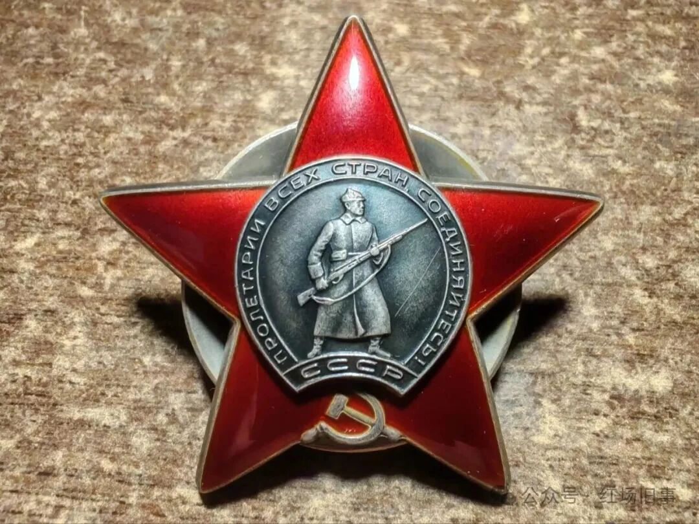
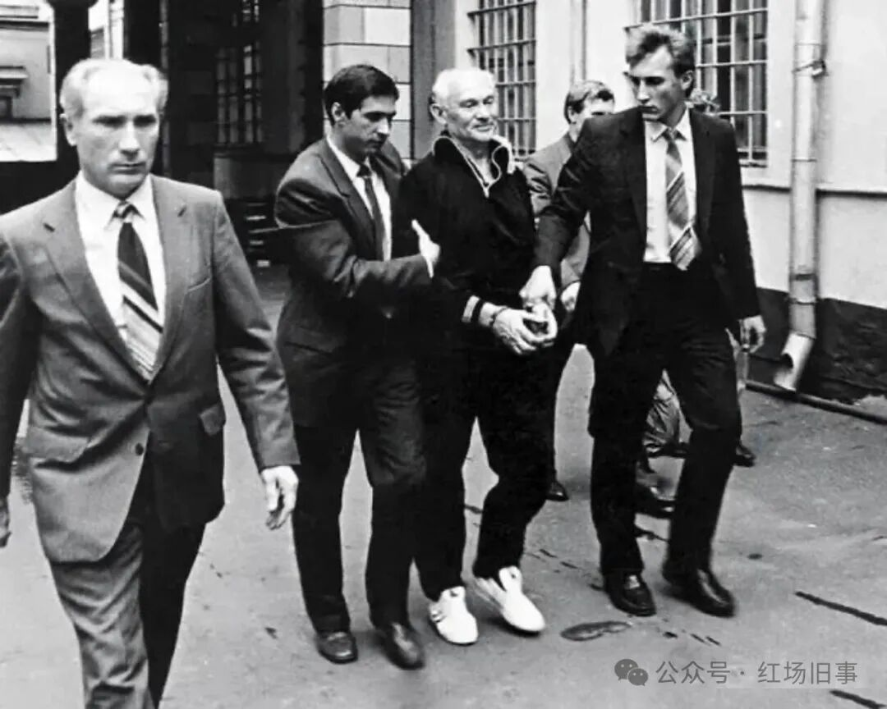
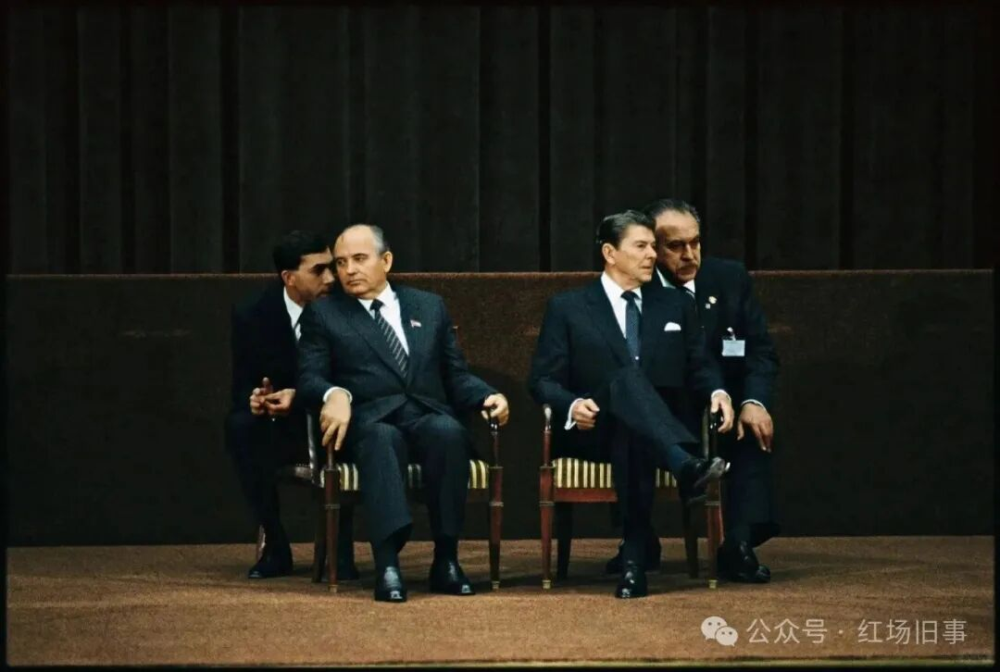

第9期 那个让苏联空军“裸奔”的工程师，死后画像挂进了CIA总部
第8期 毒瘾、间谍与卫星：两个年轻人如何毁掉中情局的“天眼”
楔子：1988年莫斯科的死刑示众1988年3月，莫斯科卢比扬卡监狱地下室。一个头发花白的老人被带进刑场。他穿着普通囚服，脸上没有任何表情。枪声响起，他的身体倒在冰冷的水泥地上。

这个人叫德米特里·波利亚科夫，67岁，苏联总参谋部军事情报总局少将。在他长达25年的间谍生涯里，他向美国提供了19名为苏联服务的外国情报员名单、150多名苏联特工的身份，直接导致1500名克格勃和格鲁乌特工完全暴露。他被美国人称为“王冠上的宝石”，是冷战期间为美国政府服务的苏联最高级别间谍。但最讽刺的是，直到他死后，他的家人还被蒙在鼓里。他在格鲁乌工作的儿子后来因无颜见人而自杀。他的坟墓没有名字，没有墓碑，没有坐标。正如他回国前对联络人说的那句话：“一座普通无名的坟墓。”
一、潜伏起点：从战场英雄到主动投敌
波利亚科夫1921年出生在乌克兰一个会计师家庭。卫国战争爆发后，他作为炮兵军官奔赴前线，在卡累利阿战役中屡建战功——他救过独立步兵团的侦察小分队，用大炮摧毁过敌军的反坦克炮，亲自上阵地探明敌情。1943年，他获得红星勋章。战后，他进入伏龙芝军事学院侦察系深造，被格鲁乌招募。1959年，他以苏联驻联合国军事参谋团代表机构秘书处主任的身份，第二次赴美工作。表面上是外交官，实则是格鲁乌的高级特工。

红星勋章但就在这一年，悲剧降临。他3岁的儿子因流感引发心脏病，在苏联做了第一次手术后，急需去美国做第二次手术，费用高达40万美元。他向上级求助，得到的答复是：莫斯科拒绝掏这笔钱，儿子早夭。1961年11月，他在一次招待会上主动找到美国国务院工作人员，要求与联邦调查局见面。11月8日，他与特工约翰·莫里首次会面，送上投名状：6名在美工作的苏联密码员名单，以及秘密间谍索科洛夫夫妇的身份。他的叛变，不是因为金钱，不是因为美色，而是因为绝望。
二、潜伏25年：他如何成为“双面间谍之王”
波利亚科夫的间谍生涯，堪称教科书级别。情报量：25年间，他先后向美国提供了25箱机密文件，塞满了近25个文件抽屉。美国中情局甚至为他专门成立了一个部门，专门消化他提供的情报。泄露名单：他曝光了19名为苏联服务的外国情报员、150多名苏联特工、1500名克格勃和格鲁乌特工。其中，苏联女特工玛丽亚·格伦被他出卖后，在逃亡中自杀；英国皇家空军工作人员博萨德被判21年监禁；多名美军现役军官被判无期徒刑。战略情报：他提供了苏联《军事思想-机密版》杂志——这是苏联总参谋部出版的绝密内参，每月一期，他连续提供了100多期。美国人通过这份杂志，彻底掌握了苏联领导层的战略意图：核战争怎么打、对北约的真实态度、对世界大战的评估。技术情报：他泄露了苏联反坦克导弹的核心机密。1991年海湾战争，伊拉克军队使用的正是这批导弹，美军因为提前知根知底，轻松摧毁。中苏关系情报：他担任过格鲁乌中国负责人，将派往中国的苏联特工名单、中苏关系恶化的核心文件全部交给了美国。这些情报成为尼克松1972年访华的重要依据。
三、传递绝技：公园长椅、石头暗号、100米发报机
波利亚科夫的谨慎，让他在克格勃眼皮底下活了25年。他用自发光胶片拍摄机密文件，照片洗出来后原片自动消除。他把装有微型胶片的塑料袋裹上砖屑，伪装成普通石头，放在高尔基公园的某条长椅下。出园时在灯柱上做个记号，美国人取走情报后，会在《纽约时报》上发一则“唐纳德·F先生”的告示，表示包裹已收到。1979年，美国人交给他一台便携式脉冲发报机，可在3秒内打印并加密大量数据。缺点是有效半径只有100米。于是他经常乘坐有轨电车路过美国驻苏使馆，在100米内快速传送情报。苏联反间谍机构截获了信号，但无法判断来源。有一次他在莫斯科起义广场地铁站旁的电车站交接情报，克格勃的无线电监测车就在几百米外，愣是没抓住他。
四、暴露真相：谁出卖了“王冠上的宝石”
1980年，苏联安插在美国联邦调查局的间谍罗伯特·汉森，首次向莫斯科报告：格鲁乌内部有个代号“高顶礼帽”的鼹鼠。但由于证据不足，波利亚科夫当时只是被召回莫斯科，并未被捕。
罗伯特·汉森真正的出卖者，是1985年。那一年，美国中情局反间谍部门的一位核心人物——奥尔德里奇·艾姆斯，因升职无望、挥霍无度，主动投靠克格勃。他每年从苏联领取近300万美元报酬，供出了至少10名向美国提供情报的苏联人，其中就包括波利亚科夫。1985年，克格勃终于确认了这位潜伏25年的“鼹鼠”。但为了掩护艾姆斯，他们没有立即动手。直到1988年3月，波利亚科夫被捕。被捕时，他正在家喝茶。看到冲进来的克格勃，他没有任何诧异，仿佛早就预想到了这一天。

波利亚科夫被逮捕照
五、死刑之谜：审讯公开，处决保密
1988年3月15日，卢比扬卡监狱地下室。波利亚科夫被带进刑场。没有公开审判，没有媒体围观，甚至没有通知家属，枪声响起的那一刻，他的死亡就成了秘密。但奇怪的是，关于他的审讯记录后来却被部分公开。2010年，俄罗斯对外情报局在军事反间谍行动展上，竟然展出了波利亚科夫的受审照片和部分卷宗。档案显示，他对所有罪行供认不讳，在法庭上没有任何辩解。这引出了一个矛盾：审讯公开，处决保密。为什么？苏联当局需要让内部知道叛徒的下场——那些可能动摇的人，看到波利亚科夫的结局会重新掂量。所以审讯记录在情报系统内部流传，甚至后来被当作“警示教育”材料，但他们不需要让全世界知道。1988年5月，美国总统里根访问莫斯科。在与戈尔巴乔夫会谈时，里根提出一个请求：能否赦免波利亚科夫，或者用在美国被捕的苏联间谍交换他？

戈尔巴乔夫的回答简短而冰冷：“他三个月前已经被处决了。”那一刻，里根才知道，美国人眼中那颗“王冠上的宝石”，已经永远消失在西伯利亚某个无名角落里。波利亚科夫的坟墓至今无人知晓。没有墓碑，没有坐标，没有可供祭拜的地方。正如他回国前对联络人说的那句预言：“一座普通无名的坟墓。”他为美国赢下冷战，美国却连他的尸骨都找不到。他为儿子之死背叛祖国，自己的儿子后来却因无颜见人而自杀。这是间谍史上最讽刺的结局：一个让苏联情报网瘫痪的人，最终也让自己的人生彻底归零。
六、动机之谜：不是为了钱，那是为了什么？
波利亚科夫是间谍界的“异类”。他不酗酒，不出轨，忠于妻子。25年间，他只从美国拿了约7.5万美元报酬，年均3000美元。有时他索要的只是鱼竿、钢笔、打火机之类的小玩意——转手送给同事，以便更好地获取情报。那他为什么背叛？说法一：儿子的死。这是最直接的导火索。儿子的手术费被莫斯科拒绝，让他对体制彻底失望。说法二：对腐败的愤怒。他在战场上见过士兵的牺牲，回国后却看到官员的腐败。他说过一句话：“如果让这样的苏联赢得冷战，对世界人民来说将是一场灾难。”说法三：自我满足。他在口供中说：“我的背叛源于内心对极限冒险的渴望。形势越危险，生活就越有趣。我习惯行走于刀锋之上，没有想过其他的人生。”波利亚科夫的背叛，让苏联全球情报网瘫痪，也让美国赢下了冷战中最关键的一局。你认为，他背叛的根本原因是什么？欢迎在评论区分享你的想法。
下期预告：奥尔德里奇·艾姆斯——CIA最危险的“内鬼”
他是中情局反间谍核心成员，却也是苏联安插最深的一颗钉子。1985年，他一人出卖了至少10名为美国工作的苏联情报员，其中包括波利亚科夫。他为何背叛？他如何隐藏了整整十年？下期，走进那个让兰利大楼蒙羞三十年的男人。第2期 潜伏军情六处30年，死后葬在莫斯科：那个让英国情报界蒙羞的“红色幽灵”第1期 戴笠追捕、中统悬赏、日本特高课全程盯梢：那个让三方头痛的“红色谍王”